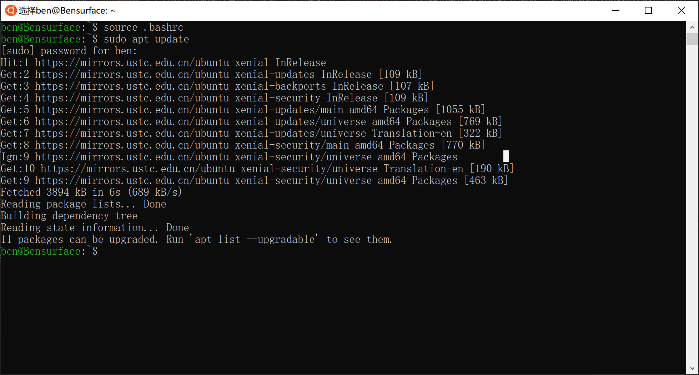
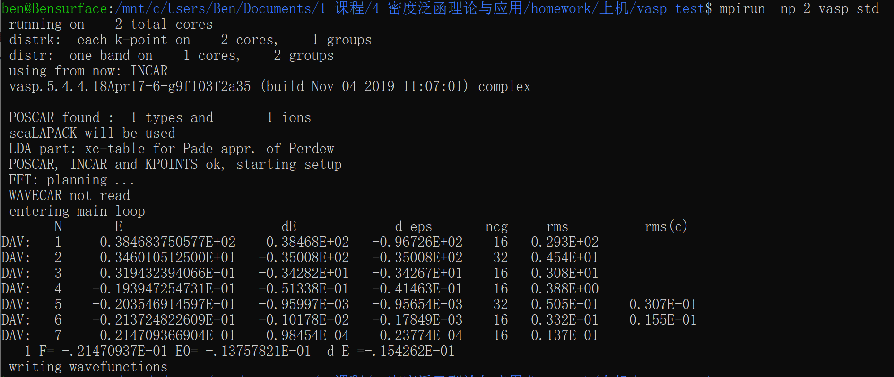

VASP在w10系统下安装
VASP有w10版本了？不，只是w10支持Linux子系统了，特别的，本篇讲解一下VASP在w10子系统Ubuntu下的安装~组里没有装VASP服务器，就算有也不敢乱提交作业…何况我只是想学习一下密度泛函，完成课程作业，还是在自己PC上学习更放心大胆一些。
本篇参考了史上最全win10下Linux子系统的安装及优化方案、vasp 5.4.4 在win10/Ubuntu 18.04上的安装和Ubuntu VASP安装和运行，感谢前人的探索，我这里稍微写详细一点，整合一下，方便新手入门。
准备和总述
- 平台和软件准备
- 版本1607之后的64位版本的Windows 10（2016年以后都支持了~）
- Intel Parallel Studio XE教育版，用学校邮箱注册，
很快就能在垃圾箱里收到邮件了，下载18M的.tgz文件（别下完整版，我们用不到那么多依赖），并记录安装序列号，不解压（可见牙膏厂给我国高校发了多少广告） - VASP 5.4.4及其POT包压缩包（密码：incv，仅供学习参考用途，解压得到两个压缩包，其中POT.txz再解压一次，vasp.5.4.4.tar.gz不用解压）
- Notepad++（会用Linux系统下vi可以不用，新手推荐）
思路是这样的，编译VASP需要C++和Fortran的程序包支持，多线需要MPI支持，这三部分集成在Intel Parallel Studio X中，直接在Intel Parallel Studio X平台下安装方便省事，安装Intel Parallel Studio X又需要一些依赖，当然上述都是在Linux环境下的，我们可以通过w10的Ubuntu子系统实现所有编译过程。
安装Ubuntu子系统
史上最全win10下Linux子系统的安装及优化方案这篇图文写得太详细了，我全部用搜索避免繁琐点击，总结一下，不懂再去看。
- 打开设置→搜索“开发者设置”→选择“开发人员模式”
- 搜索“启用或关闭windows功能”→倒数第三排勾选上“适用于Linux的Windows子系统”→重启
- 打开win10应用商店→搜索“Ubuntu”→选择第一个安装
- 启动Ubuntu等待安装完毕→提示新建Linux用户名和密码，Linux下密码是不显示的，但是已经输入
注意事项
- Linux子系统的默认安装位置为
C:\Users\你w10用户名\AppData\Local\Packages\CanonicalGroupLimited.UbuntuonWindows_79rhkp1fndgsc\LocalState\rootfs，建议创建快捷方式，后面会经常用到，以后用你Linux安装地址指代。w10下载的安装包千万别直接移到这里，不然Linux系统会识别不到。- Linux下的文件千万不要用w10自带的记事本、写字板打开，
右键用Notepad++打开编辑。因为w10和Linux换行格式不同。不小心用w10笔记本打开了，请用Notepad++转化为Linux格式。
为增加下载速度，更换国内源。用Notepad++打开发现使用国内源会报错，还没找到没有解决方法，大家还是科学上网吧= =你Linux安装地址\etc\apt\sources.list，删除所有内容，加上下面科大源
deb https://mirrors.ustc.edu.cn/ubuntu/ xenial main restricted universe multiverse
deb https://mirrors.ustc.edu.cn/ubuntu/ xenial-updates main restricted universe multiverse
deb https://mirrors.ustc.edu.cn/ubuntu/ xenial-backports main restricted universe multiverse
deb https://mirrors.ustc.edu.cn/ubuntu/ xenial-security main restricted universe multiverse然后打开Ubuntu Shell（就是那个黑色的输入界面），输入
sudo apt update
sudo apt-get update
sudo apt-get upgrade
安装Intel Parallel Studio XE需要的依赖
打开Ubuntu Shell在里面一条条粘贴执行（Enter）以下命令，Shell下粘贴是鼠标右键，一条条安装依赖，有些需要输入Y来继续安装过程。
sudo apt update
sudo apt-get install gfortran
sudo apt-get install build-essential
sudo apt-get install libstdc++5
sudo apt-get install lib32stdc++6
sudo apt-get install libc6-dev-i386
sudo apt-get install g++-multilib
sudo apt install flex
sudo apt install texinfo这些依赖有多的，但是我也不知道哪些多的，都装上没问题，少装问题就大了，有实验过的同学可以跟我交流一下，安装完关闭Ubuntu Shell就好
安装配置Intel Parallel Studio XE
- 在你下载的好Intel Parallel Studio XE教育版压缩包的目录下，同时按住
Shift鼠标右键，打开Linux Shell（会cd的自己看着办，小白这样最好这样操作），一条条执行下面命令，其中parallel_studio_xe_2019_update5_cluster_edition_online.tgz换成你下载安装包的名称
tar -xzvf parallel_studio_xe_2019_update5_cluster_edition_online.tgz
cd parallel_studio_xe_2019_update5_cluster_edition_online
sudo ./install.sh一路按照要求（要学会看英文呀，Linux安装都是英文的，不难的）进行安装，注意后面选择自定义安装，把不需要的组件全部取消选择（硬盘空间大除外）。编译VASP的环境只需要：Intel C++，Intel fortran，math kernel for fortran，math kenel for C++，以及 Intel mpi，总共安装五个组件，但是选择时会额外自动选择其他依赖包，不要取消勾选，大小约为 5 GB（完整的是 16 GB ）。
- 安装完后在
你Linux安装地址\home\你Ubuntu用户名找到.bashrc文件，千万不要用w10自带的记事本、写字板打开，
右键用Notepad++打开，在最后一行内添加如下内容，2019.5.281换成你安装文件的目录
source /opt/intel/compilers_and_libraries_2019.5.281/linux/bin/compilervars.sh intel64
source /opt/intel/compilers_and_libraries_2019.5.281/linux/bin/iccvars.sh intel64
source /opt/intel/compilers_and_libraries_2019.5.281/linux/bin/ifortvars.sh intel64
source /opt/intel/compilers_and_libraries_2019.5.281/linux/mkl/bin/mklvars.sh intel64
source /opt/intel/impi/2019.5.281/intel64/bin/mpivars.sh 然后一条条执行
source .bashrc
which icc ifort icpc mpiifort 若提示xxx:command not found，再执行一遍上述命令，没有提示即完成，关闭Shell。
- 然后进入
你Linux安装地址\opt\intel\compilers_and_libraries_2019.5.281\linux\mkl\interfaces\fftw3xf，同时按住Shift鼠标右键，打开Linux Shell，一条条执行，第一条是进入root用户，需要输入你的用户名密码。第二条编译完退出Shell，该目录下出现文件：libfftw3xf_intel.asudo su source /home/你Linux用户名/.bashrc make libintel64
安装VASP
- 在你解压好得VASP两个压缩包的目录下，按住
Shift鼠标右键，打开Linux Shell一条条执行下面命令，
tar -xzvf vasp.5.4.4.tar.gz
cd vasp.5.4.4
cp arch/makefile.include.linux_intel makefile.include得到makefile.include文件，千万不要用w10自带的记事本、写字板打开，
右键用Notepad++打开，添加一行：
MKLROOT = /opt/intel/compilers_and_libraries_2019.5.281/linux/mkl
MKL_PATH = $(MKLROOT)/lib/intel64
BLAS =
LAPACK =
BLACS = -lmkl_blacs_intelmpi_lp64
SCALAPACK = $(MKL_PATH)/libmkl_scalapack_lp64.a $(BLACS)修改以下内容：
OBJECTS = fftmpiw.o fftmpi_map.o fft3dlib.o fftw3d.o \
$(MKLROOT)/interfaces/fftw3xf/libfftw3xf_intel.a然后执行开始编译
make all大概30分钟左右会完成编译，关闭Shell，在bin文件夹中会生成三个文件
vasp_gam vasp_ncl vasp_std最后添加环境变量，在
你Linux安装地址/home/你Linux用户名/.bashrc中添加以下内容，千万不要用w10自带的记事本、写字板打开，
右键用Notepad++打开。export PATH=/home/你的Linux用户名/vasp:$PATH
在Linux环境下创建VASP的快捷方式，打开Shell，一条条执行以代码
mkdir vasp
cd vasp
ln -s /你安装vasp的位置/vasp.5.4.4/build/gam/vasp vasp_gam
ln -s /你安装vasp的位置/vasp.5.4.4/build/ncl/vasp vasp_ncl
ln -s /你安装vasp的位置/vasp.5.4.4/build/std/vasp vasp_std
cd
source ~/.bashrc运行VASP检查安装
以计算氧原子为例，新建一个工作文件夹，用Notepad++新建三个文件，INCAR，KPOINTS，POSCAR，内容分别为
SYSTEM = O atom
ISMEAR = 0
SIGMA = 0.01K-POINTS
0
Gamma
1 1 1
0 0 0O atom in a box
1.0
8.0 0.0 0.0
0.0 8.0 0.0
0.0 0.0 8.0
1
Cartesian
0 0 0在POT\PAW_PBE\O文件夹中找到氧的POTCAR文件，复制到同一文件夹中，同时按住Shift鼠标右键，打开Linux Shell，执行，
mpirun -np 2 vasp_std
或者
vasp_std得到以下结果或者接近结果，则安装成功！

最后推荐一个VASP学习网站：Learn VASP The Hard Way。名字看上去很难，但是从Linux入门开始讲起，十分适合新手。